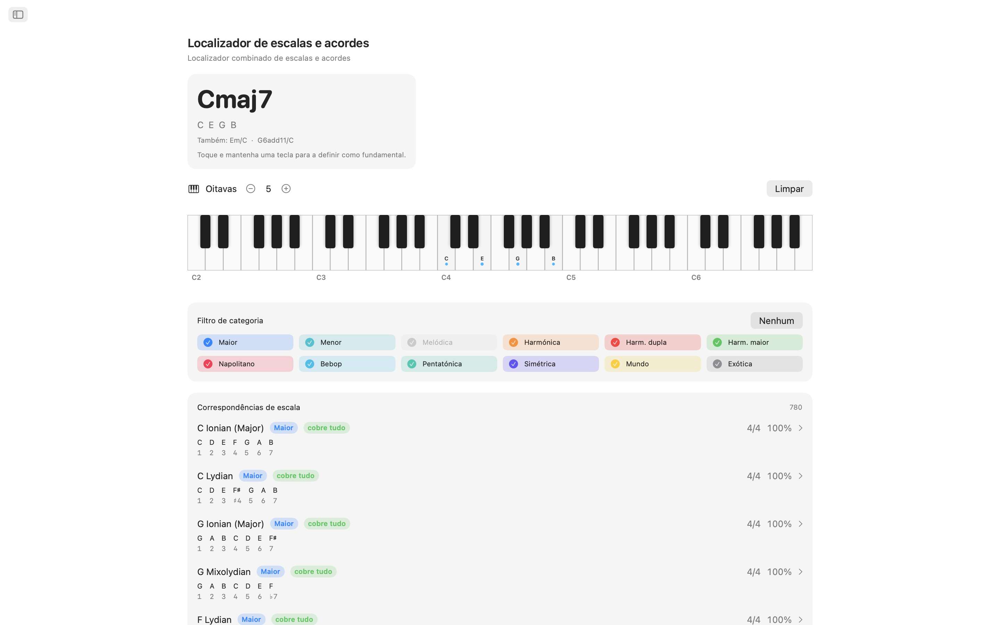
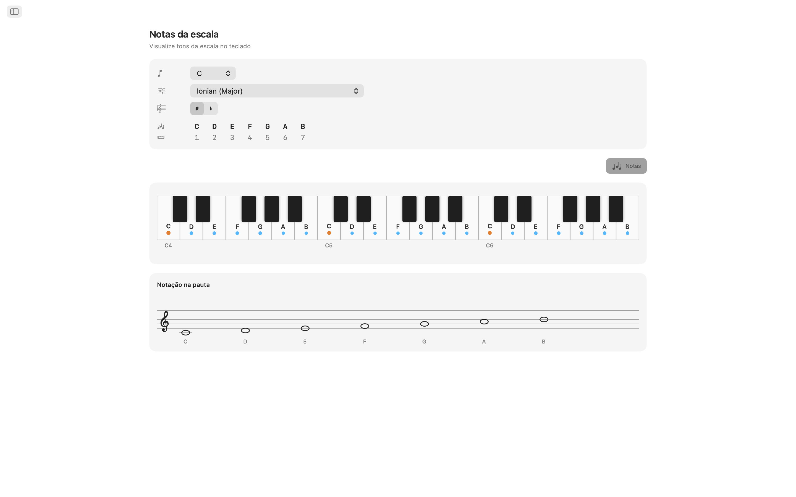
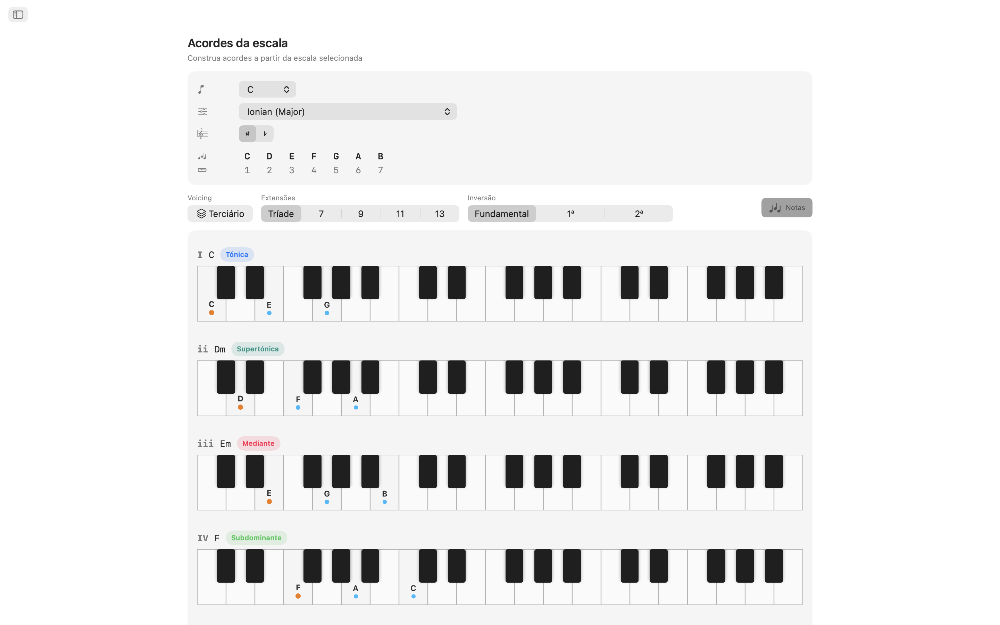
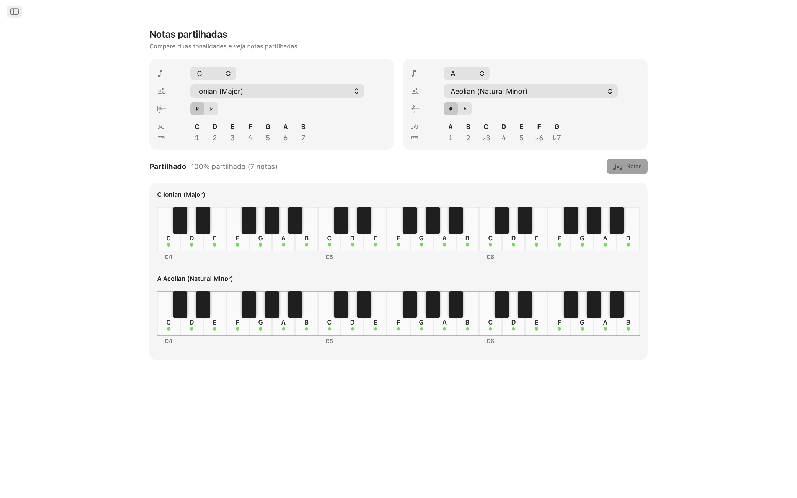
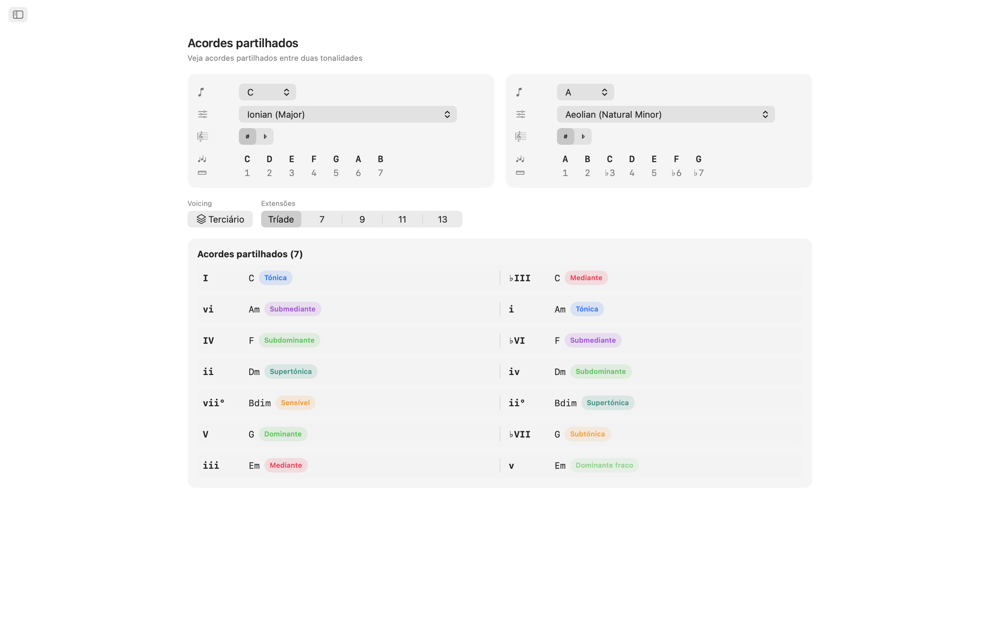
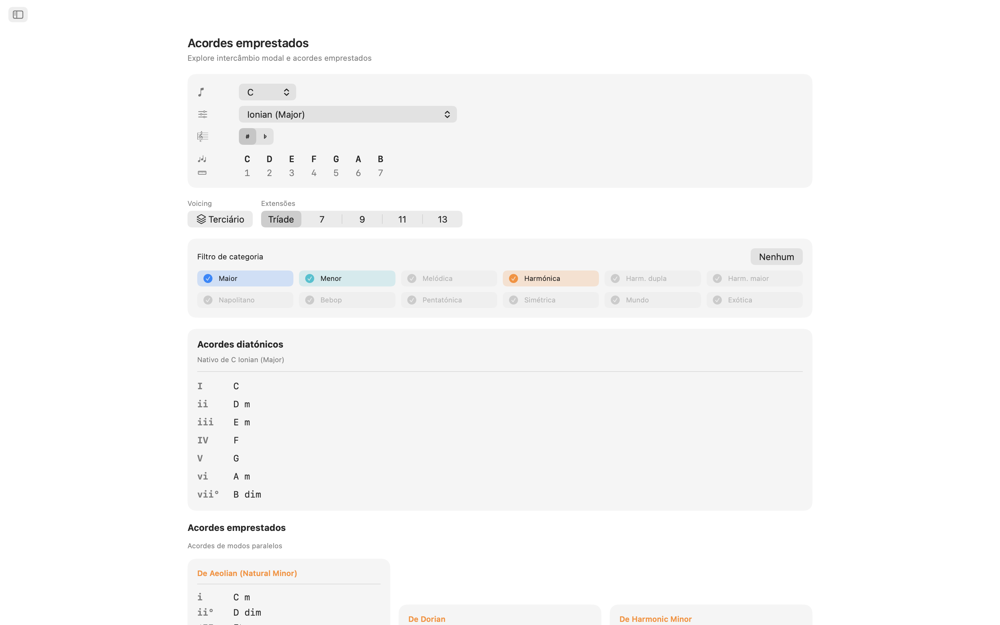
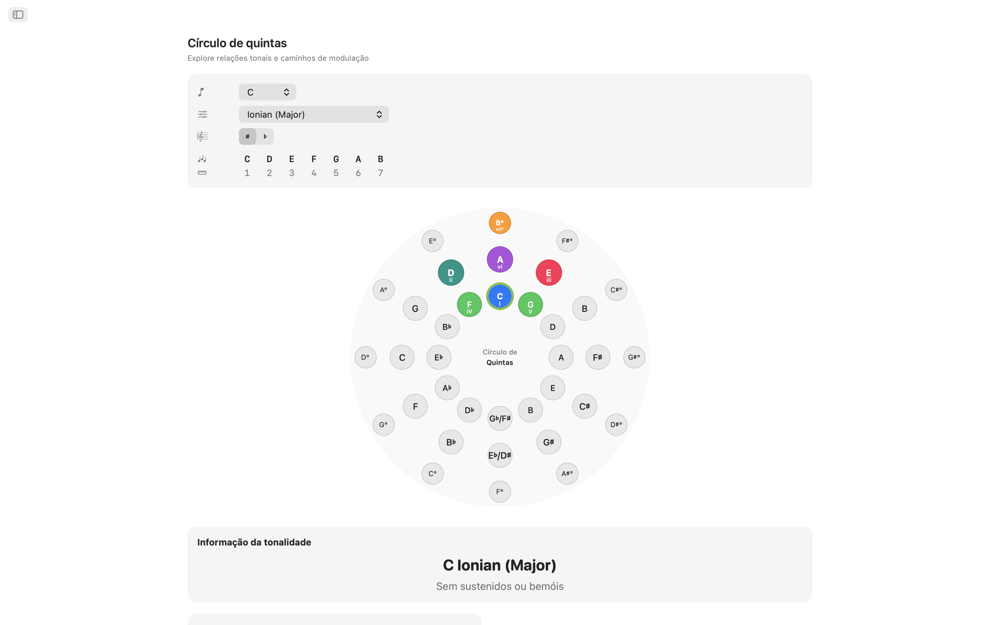
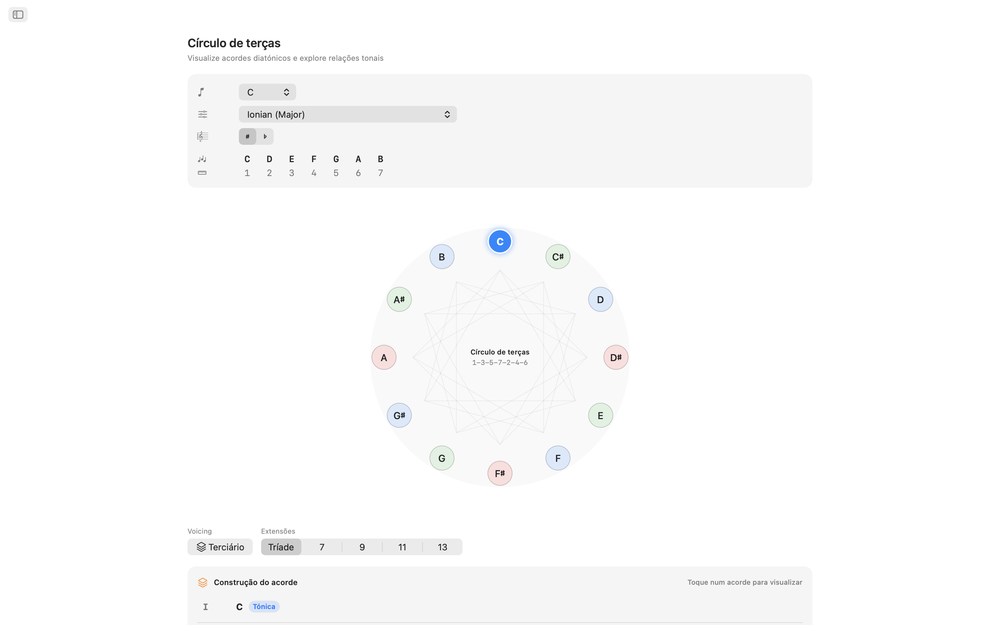
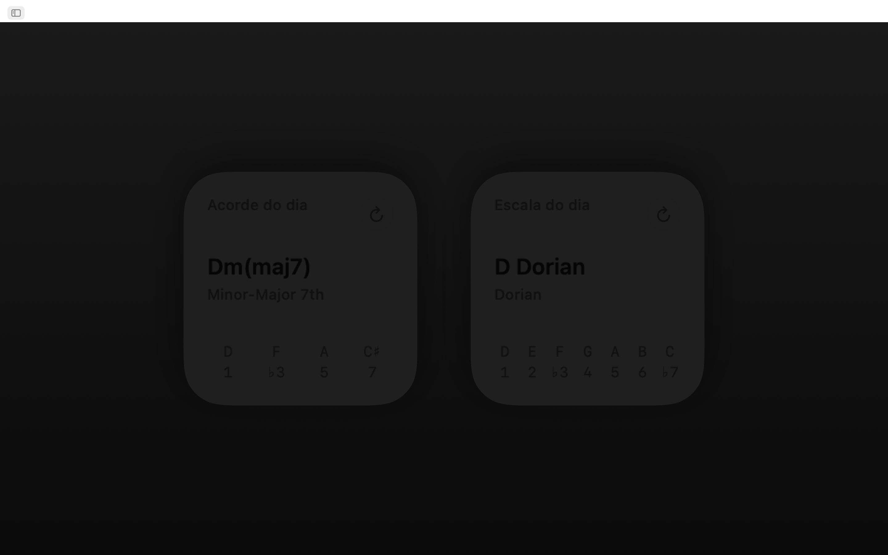
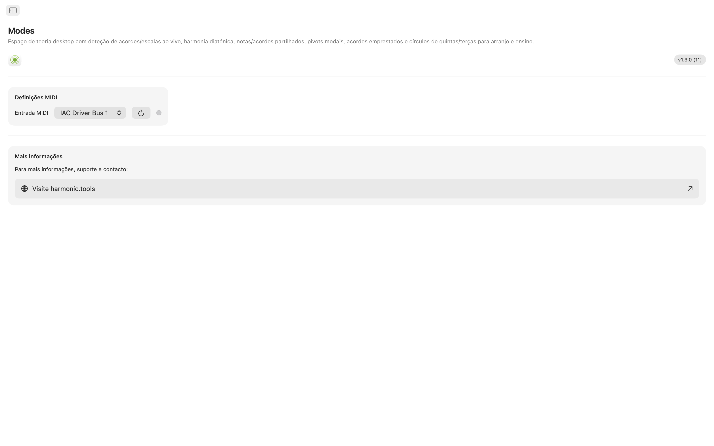

Modes para macOS
Um laboratório interativo de teoria musical para macOS. Quer esteja a escrever uma canção, a preparar uma aula ou a explorar novo território harmónico, o Modes dá-lhe acesso instantâneo a escalas, acordes, voicings e caminhos de modulação — tudo numa aplicação clara com navegação lateral que funciona ao lado da sua DAW. Agora com Siri, Shortcuts, pesquisa Spotlight e widgets no Centro de Notificações.
- Pesquisa de Escalas e Acordes com MIDI + teclado no ecrã
- 65 escalas · 21 tipos de acordes · 8 famílias de voicings
- Notas Partilhadas, Acordes Partilhados, Acordes Emprestados
- Ciclo de Quintas + Ciclo de Terças interativos
- Siri, Shortcuts, Spotlight e widgets no Centro de Notificações
Capturas de Ecrã
Inclui capturas de ecrã em modo claro e escuro que acompanham o tema do website.












Funcionalidades
- Pesquisa de Escalas e Acordes: Toque notas no teclado interativo multi-oitavas ou ligue um controlador MIDI. O Modes identifica o acorde que está a tocar em tempo real: maior, menor, diminuto, aumentado, extenso, suspenso e mais. Classifica cada escala correspondente por cobertura de notas. Filtre os resultados por categoria de escala (diatónica, menor melódica, menor harmónica, pentatónica, bebop, simétrica, world e mais) para encontrar o som pretendido.
- 65 Escalas e Modos: Desde os sete modos diatónicos, passando por menor melódica, menor harmónica, harmónica dupla, napolitana, bebop, pentatónica, blues, tons inteiros, diminuta, aumentada e escalas world como Hirajōshi, Kumoi, In Sen, Persa e Enigmática. Cada escala é apresentada com intervalos e destacada no teclado.
- Notas na Tonalidade: Escolha qualquer fundamental e escala para ver todas as notas da tonalidade destacadas ao longo de duas oitavas. Visualize instantaneamente quais notas pertencem e onde se situa a fundamental.
- Acordes da Escala: Gere tríades ou sétimas diatónicas para cada grau da escala escolhida. Veja numeração romana, nomes de acordes, etiquetas de função harmónica (tónica, subdominante, dominante e mais de 30 etiquetas detalhadas) e representações de teclado com voicings, tudo alinhado para comparação fácil.
- 8 Tipos de Voicings: Construa acordes em voicings terciários, sus2, sus4, sexta, add, quartais, quintais e power. Escolha de tríades a décimas terceiras, com cada extensão etiquetada automaticamente.
- Notas e Acordes Partilhados: Compare quaisquer duas tonalidades lado a lado. Veja quais notas se sobrepõem, quais são únicas e quais acordes ambas as tonalidades partilham. Essencial para modulação suave e rearmonização.
- Acordes Emprestados: Analise a sua tonalidade para acordes diatónicos nativos juntamente com todas as opções emprestadas de modos paralelos, agrupadas por modo de origem. Descubra cores harmónicas frescas sem sair do seu centro tonal.
- Ciclo de Quintas: Círculo interativo de duplo anel (maior por fora, menor natural por dentro). Clique num setor para mudar a tonalidade. Veja relações de dominante, subdominante, relativo, paralelo e tonalidades próximas num relance, com etiquetas de dificuldade de modulação e detalhes de armação de clave.
- Ciclo de Terças: Explore relações de mediantes cromáticas num diagrama de ciclo diminuto. Botões maior e menor para cada classe de altura revelam ligações de mediante, relativo e paralelo. Perfeito para planeamento de modulação cinematográfica e neo-Riemanniana.
- Suporte MIDI: Ligue qualquer teclado ou controlador MIDI compatível. As notas tocadas fundem-se com os cliques no ecrã para deteção contínua.
- Siri, Shortcuts e Spotlight: Peça à Siri ou execute um Shortcut para mostrar as notas de uma escala, listar os acordes de uma tonalidade, identificar uma escala ou acorde, soletrar um acorde, encontrar o intervalo entre duas notas, transpor uma nota ou abrir o ciclo de quintas e os acordes emprestados. As escalas e os acordes são indexados no Spotlight, para que possa pesquisá-los diretamente a partir do Spotlight.
- Widgets do Centro de Notificações: Adicione os widgets Escala do Dia e Acorde do Dia ao Centro de Notificações para uma dose diária de teoria.
Desenvolvido para o Seu Desktop
- Funciona totalmente offline — sem conta, sem anúncios, sem rastreamento
- Aplicação nativa macOS com navegação lateral
- Interface com modo escuro que acompanha a aparência do sistema
- Escrita enarmónica: automática, sustenidos ou bemóis
- Janela redimensionável — mantenha-a aberta ao lado da sua DAW
Quer seja um produtor a esboçar progressões de acordes, um guitarrista a aprender modos, um pianista a estudar harmonia jazz ou um estudante a preparar-se para exames de teoria, o Modes coloca teoria musical aprofundada no seu desktop.
Cobertura de Teoria Musical
Uma referência completa de cada escala, modo, acorde, voicing, intervalo e ferramenta harmónica disponível na aplicação, com as fórmulas de notas exatas por detrás de cada um.
Escalas e Modos — 65 no Total
Cada escala é escrita com tokens de intervalo e destacada ao longo do teclado, com escrita enarmónica automática, com sustenidos ou com bemóis.
Modos Maiores (Diatónicos)
| Ionian (Major) | 1 2 3 4 5 6 7 |
| Dorian | 1 2 ♭3 4 5 6 ♭7 |
| Phrygian | 1 ♭2 ♭3 4 5 ♭6 ♭7 |
| Lydian | 1 2 3 ♯4 5 6 7 |
| Mixolydian | 1 2 3 4 5 6 ♭7 |
| Aeolian (Natural Minor) | 1 2 ♭3 4 5 ♭6 ♭7 |
| Locrian | 1 ♭2 ♭3 4 ♭5 ♭6 ♭7 |
Modos da Menor Melódica (Jazz Minor)
| Melodic Minor (Jazz Minor) | 1 2 ♭3 4 5 6 7 |
| Dorian ♭2 (Phrygian ♮6) | 1 ♭2 ♭3 4 5 6 ♭7 |
| Lydian Augmented (Lydian ♯5) | 1 2 3 ♯4 ♯5 6 7 |
| Lydian Dominant (Lydian ♭7) | 1 2 3 ♯4 5 6 ♭7 |
| Mixolydian ♭6 (Aeolian Dominant) | 1 2 3 4 5 ♭6 ♭7 |
| Locrian ♯2 (Locrian ♮2) | 1 2 ♭3 4 ♭5 ♭6 ♭7 |
| Altered (Super-Locrian) | 1 ♭2 ♭3 ♭4 ♭5 ♭6 ♭7 |
Modos da Menor Harmónica
| Harmonic Minor | 1 2 ♭3 4 5 ♭6 7 |
| Locrian ♮6 | 1 ♭2 ♭3 4 ♭5 6 ♭7 |
| Ionian ♯5 (Augmented Major) | 1 2 3 4 ♯5 6 7 |
| Dorian ♯4 (Ukrainian Dorian) | 1 2 ♭3 ♯4 5 6 ♭7 |
| Phrygian Dominant | 1 ♭2 3 4 5 ♭6 ♭7 |
| Lydian ♯2 | 1 ♯2 3 ♯4 5 6 7 |
| Super Locrian ♭♭7 (Altered ♭♭7) | 1 ♭2 ♭3 ♭4 ♭5 ♭6 ♭♭7 |
Modos da Menor Harmónica Dupla (Menor Húngara)
| Hungarian Minor (Double Harmonic Minor) | 1 2 ♭3 ♯4 5 ♭6 7 |
| Oriental (Mode 2) | 1 ♭2 3 4 ♭5 6 ♭7 |
| Ionian ♯2 ♯5 | 1 ♯2 3 4 ♯5 6 7 |
| Locrian ♭♭3 ♭♭7 | 1 ♭2 ♭♭3 4 ♭5 ♭6 ♭♭7 |
| Double Harmonic Major | 1 ♭2 3 4 5 ♭6 7 |
| Lydian ♯2 ♯6 | 1 ♯2 3 ♯4 5 ♯6 7 |
| Ultraphrygian | 1 ♭2 ♭3 ♭4 5 ♭6 ♭♭7 |
Maior Harmónica
| Harmonic Major (Ionian ♭6) | 1 2 3 4 5 ♭6 7 |
| Double Harmonic Major (Byzantine) | 1 ♭2 3 4 5 ♭6 7 |
Modos da Menor Napolitana
| Neapolitan Minor | 1 ♭2 ♭3 4 5 ♭6 7 |
| Lydian ♯6 | 1 2 3 ♯4 5 ♯6 7 |
| Mixolydian Augmented | 1 2 3 4 ♯5 6 ♭7 |
| Romani Minor (Aeolian ♯4) | 1 2 ♭3 ♯4 5 ♭6 ♭7 |
| Locrian Dominant | 1 ♭2 3 4 ♭5 ♭6 ♭7 |
| Ionian ♯2 | 1 ♯2 3 4 5 6 7 |
| Ultralocrian | 1 ♭2 ♭♭3 ♭4 ♭5 ♭6 ♭♭7 |
Modos da Maior Napolitana
| Neapolitan Major | 1 ♭2 ♭3 4 5 6 7 |
| Leading Whole Tone (Lydian Augmented ♯6) | 1 2 3 ♯4 ♯5 ♯6 7 |
| Lydian Augmented Dominant | 1 2 3 ♯4 ♯5 6 ♭7 |
| Lydian Dominant ♭6 | 1 2 3 ♯4 5 ♭6 ♭7 |
| Major Locrian | 1 2 3 4 ♭5 ♭6 ♭7 |
| Half-Diminished ♭4 (Altered Dominant ♯2) | 1 2 ♭3 ♭4 ♭5 ♭6 ♭7 |
| Altered Dominant ♭♭3 | 1 ♭2 ♭♭3 ♭4 ♭5 ♭6 ♭7 |
Bebop
| Bebop Dominant | 1 2 3 4 5 6 ♭7 7 |
| Bebop Major | 1 2 3 4 5 ♭6 6 7 |
Pentatónica e Blues
| Pentatonic Major | 1 2 3 5 6 |
| Pentatonic Suspended (Egyptian) | 1 2 4 5 ♭7 |
| Pentatonic Blues Minor (Man Gong) | 1 ♭3 4 ♭6 ♭7 |
| Pentatonic Blues Major (Yo) | 1 2 4 5 6 |
| Pentatonic Minor | 1 ♭3 4 5 ♭7 |
| Pentatonic Japanese (In) | 1 ♭2 4 5 ♭6 |
| Blues | 1 ♭3 4 ♭5 5 ♭7 |
| Blues (Major) | 1 2 ♭3 3 5 6 |
Simétricas e Sintéticas
| Whole Tone | 1 2 3 ♯4 ♯5 ♭7 |
| Diminished (Half–Whole) | 1 ♭2 ♭3 3 ♭5 5 6 ♭7 |
| Diminished (Whole–Half) | 1 2 ♭3 4 ♭5 ♭6 6 7 |
| Augmented (Hexatonic) | 1 ♭3 3 5 ♯5 7 |
| Prometheus (Mystic Hexatonic) | 1 2 3 ♯4 6 ♭7 |
Pentatónicas Japonesas
| Hirajōshi | 1 2 ♭3 5 ♭6 |
| Kumoi | 1 2 ♭3 5 6 |
| In Sen | 1 ♭2 4 5 ♭7 |
| Iwato | 1 ♭2 4 ♭5 ♭7 |
World / Outras
| Persian | 1 ♭2 3 4 ♭5 ♭6 7 |
| Enigmatic | 1 ♭2 3 ♯4 ♯5 ♯6 7 |
Acordes
Tipos de Acordes Detetados — 21
Os acordes são detetados a partir das notas que toca, com tensões de 9.ª, 11.ª e 13.ª acrescentadas automaticamente (apresentadas como add9, add11, add13 quando não há 7.ª presente). Quando a nota mais grave está abaixo do acorde, é tratada como nota de baixo e apresentada como acorde com baixo (por exemplo, C/E).
| Acorde | Símbolo | Intervalos |
|---|---|---|
| Major | — | 1 3 5 |
| Minor | m | 1 ♭3 5 |
| Diminished | dim | 1 ♭3 ♭5 |
| Augmented | aug | 1 3 ♯5 |
| Suspended 2nd | sus2 | 1 2 5 |
| Suspended 4th | sus4 | 1 4 5 |
| Power Chord | 5 | 1 5 |
| Major 6th | 6 | 1 3 5 6 |
| Minor 6th | m6 | 1 ♭3 5 6 |
| Dominant 7th | 7 | 1 3 5 ♭7 |
| Major 7th | maj7 | 1 3 5 7 |
| Minor 7th | m7 | 1 ♭3 5 ♭7 |
| Half-Diminished 7th | m7♭5 | 1 ♭3 ♭5 ♭7 |
| Diminished 7th | dim7 | 1 ♭3 ♭5 ♭♭7 |
| Minor-Major 7th | m(maj7) | 1 ♭3 5 7 |
| Augmented 7th | aug7 | 1 3 ♯5 ♭7 |
| Augmented Major 7th | aug(maj7) | 1 3 ♯5 7 |
| Major (♭5) | (♭5) | 1 3 ♭5 |
| Diminished (♭♭3) | dim(♭♭3) | 1 ♭♭3 ♭5 |
| Dominant 7sus4 | 7sus4 | 1 4 5 ♭7 |
| Dominant 7sus2 | 7sus2 | 1 2 5 ♭7 |
Qualidades de Acordes (Construtor) — 6
Opções de qualidade no construtor de acordes, cada uma com a sua análise em numeração romana.
| Qualidade | Símbolo | Numeração Romana |
|---|---|---|
| Major | — | Uppercase (I, IV, V…) |
| Minor | m | Lowercase (ii, iii, vi…) |
| Diminished | ° | Lowercase + ° (vii°) |
| Augmented | + | Uppercase + + (III+) |
| Major (♭5) | (♭5) | Uppercase + (♭5) |
| Diminished (♭♭3) | °(♭♭3) | Lowercase + °(♭♭3) |
Voicings de Acordes — 8 Tipos
Cada acorde pode ter oito tipos de voicing, desde voicings terciários de terças empilhadas até pilhas quartais e quintais.
| Voicing | Dimensões | Descrição |
|---|---|---|
| Tertian | Triad, 7th, 9th, 11th, 13th | Standard stacked-thirds voicings |
| sus2 | Triad, 7th | Replaces the 3rd with the 2nd |
| sus4 | Triad, 7th | Replaces the 3rd with the 4th |
| 6th | 6th, 6/9 | Adds the 6th (and optionally 9th) |
| Add | add9, add11 | Adds a tone without the 7th |
| Quartal | 3-note, 4-note | Built in stacked 4ths |
| Quintal | 3-note, 4-note | Built in stacked 5ths |
| Power | 2-note | Root + 5th only |
Dimensões de Acordes
| Dimensão | Etiqueta | Notas |
|---|---|---|
| Power | 5 | 2 |
| Triad | Triad | 3 |
| Sixth | 6 | 4 |
| Six-Nine | 6/9 | 5 |
| Seventh | 7 | 4 |
| Ninth | 9 | 5 |
| Eleventh | 11 | 6 |
| Thirteenth | 13 | 7 |
| Add 9 | add9 | 4 |
| Add 11 | add11 | 4 |
| Quartal 4-note | 4×4 | 4 |
| Quintal 4-note | 5×4 | 4 |
Intervalos — 12 Cromáticos
Cada intervalo cromático com a sua inversão.
| Semitons | Intervalo | Inversão |
|---|---|---|
| 0 | Unison | Octave |
| 1 | Minor 2nd | Major 7th |
| 2 | Major 2nd | Minor 7th |
| 3 | Minor 3rd | Major 6th |
| 4 | Major 3rd | Minor 6th |
| 5 | Perfect 4th | Perfect 5th |
| 6 | Tritone | Tritone |
| 7 | Perfect 5th | Perfect 4th |
| 8 | Minor 6th | Major 3rd |
| 9 | Major 6th | Minor 3rd |
| 10 | Minor 7th | Major 2nd |
| 11 | Major 7th | Minor 2nd |
Análise Harmónica — 31 Etiquetas de Função
Os acordes diatónicos são classificados em três famílias funcionais.
Família da Tónica
Família da Subdominante
Família da Dominante
Tonalidades
Todas as 12 tonalidades cromáticas em escrita com sustenidos e com bemóis. A escrita enarmónica pode ser definida como automática (contextual), com sustenidos ou com bemóis.
Tonalidades com Sustenidos
Tonalidades com Bemóis
Ciclo de Quintas
Navegação completa do ciclo de quintas com dados de tonalidades relacionadas para cada tonalidade.
C → G → D → A → E → B → F♯/G♭ → D♭ → A♭ → E♭ → B♭ → F → C
Cada tonalidade revela as suas relações de relativa menor/maior, paralela maior/menor, dominante, subdominante, supertónica e mediante, com selos de dificuldade de modulação e detalhes da armação de clave.
Ciclo de Terças
Organiza as alturas alternando terças maiores e menores (4–3–4–3 semitons) numa sequência repetida de 24 notas (12 posições maiores + 12 menores) — útil para compreender como as tríades e os acordes de 7.ª se empilham.
- Ordem dos graus da escala — as notas aparecem na ordem 1–3–5–7–2–4–6 (por exemplo, C–E–G–B–D–F–A), a ordem pela qual as notas do acorde se empilham.
- Mnemónica DFACEGB — terças diatónicas ao longo das famílias de tonalidades com bemóis, naturais e com sustenidos.
- Estrutura cíclica — três ciclos de 7.ª diminuta com quatro posições cada.
- Aplicações — mudanças de Coltrane e relações de mediante cromática.
Acordes Emprestados (Intercâmbio Modal)
Para qualquer tonalidade, a aplicação lista tanto os acordes diatónicos como os acordes emprestados extraídos de modos paralelos, cada um identificado com um numeral romano alterado e uma descrição de utilização comum.
Fontes de Empréstimo por Escala
| Escala Atual | Fontes de Empréstimo Comuns |
|---|---|
| Ionian (Major) | Aeolian, Dorian, Phrygian, Mixolydian, Harmonic Minor, Melodic Minor, Lydian |
| Aeolian (Natural Minor) | Ionian, Mixolydian, Dorian, Harmonic Minor, Phrygian Dominant |
| Dorian | Ionian, Aeolian, Mixolydian, Harmonic Minor |
| Phrygian | Aeolian, Harmonic Minor, Phrygian Dominant, Ionian |
| Lydian | Ionian, Aeolian, Mixolydian |
| Mixolydian | Ionian, Aeolian, Dorian |
| Locrian | Aeolian, Phrygian, Harmonic Minor |
| Harmonic Minor | Aeolian, Ionian, Melodic Minor |
| Melodic Minor | Harmonic Minor, Aeolian, Ionian |
| Phrygian Dominant | Harmonic Minor, Aeolian, Phrygian |
| Other scales | Ionian, Aeolian (basic major/minor borrowing) |
Acordes Emprestados Comuns para Maior
| Acorde | Fonte | Utilização Típica |
|---|---|---|
| iv | Aeolian / Harmonic Minor | Most common borrowed chord — melancholy subdominant |
| ♭VI | Aeolian | Pop/rock deceptive resolution |
| ♭VII | Mixolydian / Aeolian | Rock/blues cadence (subtonic) |
| ♭III | Aeolian | Mediant shift between parallel major/minor |
| i | Aeolian | Minor tonic colour |
| ii° | Aeolian | Darker predominant using ♭6 |
| vii°7 | Harmonic Minor | Fully diminished, strong resolution to I |
| ♭VI+ | Harmonic Minor | Augmented chromatic voice leading |
| ♭II (Neapolitan) | Phrygian | Dramatic pre-dominant |
| II | Dorian | Major supertonic, secondary-dominant feel |